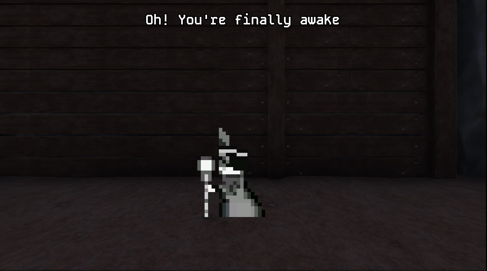

MineVenturer
Technical details
Engine: Godot
Version: 4.3
Genre: Survival
Team of 2 people:
- me as a programmer and level designer,
- my friend as a programmer and 2D asset creator.
Assets: Free from Itch.io, created by my teammate, provided by organizators.
Itch.io: Link
Code: Link
Description
Game was created during 14C Game Jam in Zabrze in coal mine 300m underground in 24h. We did secure 2nd place with it. The game jam theme was "In between the time", which we interpreted in our main game mechanic. That is, time being stopped when player is moving, and the time resuming when the player stops moving. As a programmer I was responsible for player movement, camera, enemy path following and the time mechanic. Other responsibilities included: audio, adding main menu and designing the level. I will describe broader 24h achievements like main game mechanic, enemy path system and shader for visual clue as I think that simple solutions might be smart especially during game jams.
Time-based main game mechanic
Core mechanic is pretty simple - when player is moving, the time is stopped, when player stops, the time is resumed. This was achieved using globaly available singleton GameManager, which checks the player movement input. Below is the code responsible for that. Simple and effective.
extends Node
@export var is_player_moving: bool = false;
func _process(delta):
var movement_vect = Input.get_vector("Move left", "Move right", "Move up", "Move down")
if movement_vect.length() == 0:
is_player_moving = false
else:
is_player_moving = trueEnemy path system
Enemies are following the previously defined path that can be adjusted depending on the level. The path is defined by the points that are placed on the map. Then there are 2 types of enemies that are following the path - one is moving one way and the other one is moving the opposite way. Below is the code responsible for that. In _process function we check the current state of the game, which is available in GameManager singleton described above. Then in the move_along_path function I am moving the enemy along the path. Here the bool value reverse_path is responsible for the direction of the enemy.
extends Path3D
@onready var path_follow: PathFollow3D = $PathFollow3D
@onready var enemy = $PathFollow3D/Enemy
@export var reverse_path: bool = false;
func move_along_path(delta):
if reverse_path:
path_follow.progress -= delta * enemy.SPEED
else:
path_follow.progress += delta * enemy.SPEED
func _process(delta):
if !GameManager.is_player_moving and is_instance_valid(enemy):
move_along_path(delta)Enemy sees you shader
Last interesting part is shader for in player's UI for visual clue about whether the enemy sees you or not. The shader is changing the color of the square at the edges of the screen. When the enemy sees you, the square is red, when not, the square is green. Also it pulses depending on TIME and sine function. Below is the code responsible for that.
shader_type canvas_item;
uniform vec3 color_undetected: source_color;
uniform vec3 color_detected: source_color;
uniform bool is_detected;
uniform float adjust_albedo: hint_range(0.0, 1.0, 0.1);
# Defining the square at the edges of the screen for visual hint
vec4 square(vec2 uv, float width)
{
uv = uv * 2.0 - 1.0;
vec2 abs_uv = abs(uv.xy);
float square = smoothstep(width - abs(sin(TIME * 2.)) / 5., width, max(abs_uv.x, abs_uv.y));
return vec4(vec3(1. - square), square * adjust_albedo);
}
# Change color on detection
vec3 change_color_on_detection(vec3 color)
{
if (is_detected)
{
color += color_detected;
}
else
{
color += color_undetected;
}
return color;
}
# Process with specified color and make the square pulse
void fragment() {
vec4 square_inst = square(UV, 1);
vec3 color = square_inst.xyz;
color = change_color_on_detection(color);
COLOR = vec4(color, square_inst.a);
}Key takeouts
That was my first stationary game jam and I think that is much different experience than the online one. You can feel the atmosphere, be there with other people and have a fully game jam experience. The game was created in 24h and I think that the time mechanic was a good choice for that period of time. I have learned how to work under pressure and how to make quick decisions to complete a game. Also I have learned how to make simple yet effective solutions and reuse previously created code - here it was main menu and audio system functionality reused from The Blessed Ones project. I have learned how to make simple shaders and how to use them in the game. I have learned how to make simple yet effective and adjustable AI that is following the path. Tight time constraints allowed me to focus on the most important things and not to waste time on unnecessary things. Thanks to that the game has menu, audio, playable level with enemies and simple puzzle.